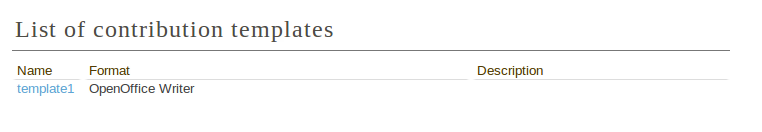
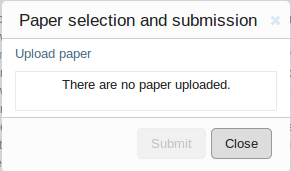
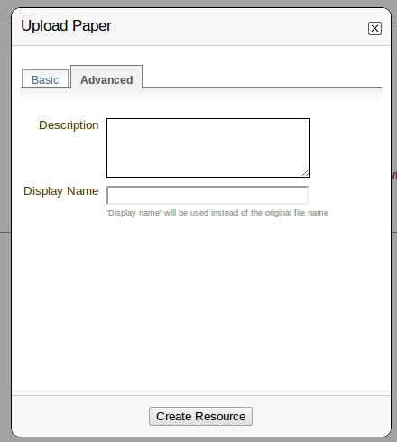
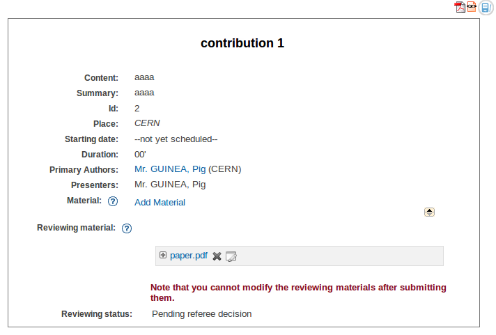
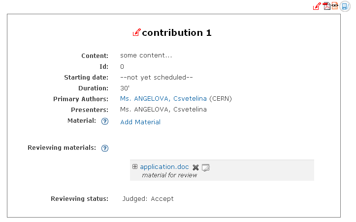
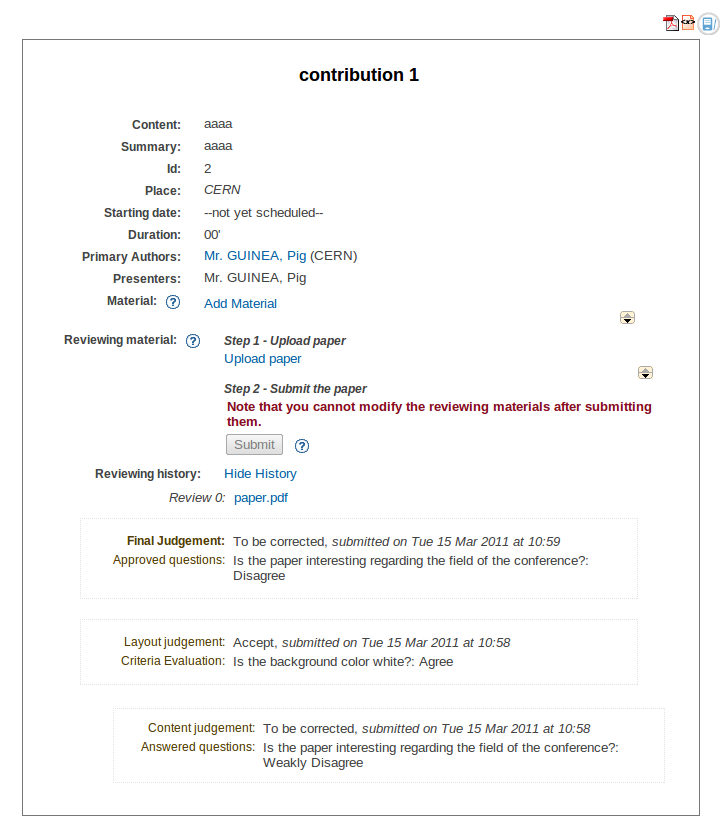

6.1. Paper reviewing module author’s guide¶
6.1.1. Getting started¶
Firstly, you must log in to the system; you will find a link Download Template in the left menu under Paper Reviewing.

6.1.2. Download template area¶
If the paper reviewing manager provides you a template for the papers, you can download it by clicking on the template name.

6.1.3. Upload paper area¶
You can access the list of contributions and follow their status from Upload paper:
By clicking on the Upload paper link you can access the specific information for the contribution where you can upload a new paper.

6.1.4. How to submit the reviewing material¶
The next step will be to submit your reviewing material. You can do this by clicking on the Upload paper link. You have to follow these two steps to submit your paper.
Step 1: Use Upload paper link, next to Reviewing material. Here you must add the material to be reviewed.

Choose the file(s) for your contribution. If you want you can add a description and a display name for the file(s) in the Advanced tab. After that click on Create Resource.

Step 2: You have to submit the reviewing material by clicking on Submit button. You need to be sure that the material you are submitting is correct because you cannot modify it after submitting.
Now you can see the Reviewing status of your paper.

The reviewing process ends when the final judgement for your paper is Accepted or Rejected.

The reviewing process will continue if the final judgement for your contribution is To be corrected. You will have to send the material again, after correction. Then the reviewing process will start again. You can see the Reviewing history after clicking on the Show history link.
